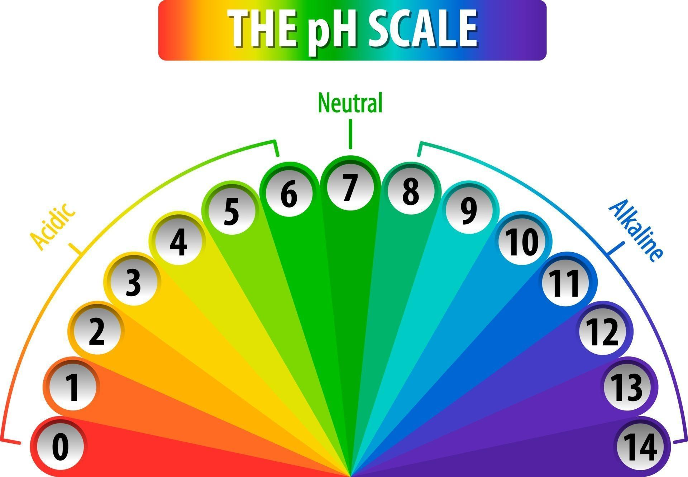

Welcome to CropFit!!
About
Agriculture is one of the most crucial sectors in our economy.
Yet many farmers face challenges in selecting the right crop for their soil. Due to the lack of scientific knowledge and wrong crop selection often leads to low yield and financial loses.
This one can suggests farmers to make right decisions in selecting crops, by reducing crop failures and engages smart farming.
This is the website which helps you in finding the suitate crops to be cultivated according to the consideration of following factors
- pH Value
- Soil Color
- Location
- Season
According to in consideration of above factors we are trying to suggest the suitable crops to farmers.
Calculating pH value of the soil
Farmers can identify pH levels, though the precision of that identification varies depending on the methods used.Here's a breakdown:
There are various methods to identify the pH
Method 1:
These kits are readily available and relatively inexpensive. They typically involve:
Taking a soil sample.
Mixing it with water.
Adding a chemical indicator.
Comparing the resulting color to a chart to determine the pH level.
These kits provide a general indication of pH and are suitable for many farming applications.

Method 2:
These are electronic devices that provide more accurate pH readings.
Farmers insert the meter's probe into the soil or a soil solution, and the device displays the pH value.
While more expensive than kits, pH meters offer greater precision
Method 3:
Farmers can send soil samples to laboratories for professional pH testing.
Labs provide very accurate results and often offer recommendations for soil amendments.
Why pH Matters to farmers:
Nutriet Availability: Soil pH affects the availability of essential nutrients to plants.
Plant Growth: Different Crops have Optimal pH ranges for growth.
Soil Health: pH influences microbial activity and overall soil health.